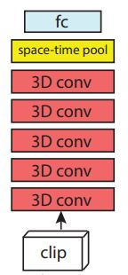

The 2D CNN version of ResNet architecture is
recasted into 3D CNNs. It has skip connections that helps
make the gradient flow better as we build more deeper networks
More details can be found
here.

Residual Network Architecture. R3D are 3D ResNets essentially.For interpretability, residual connections are omitted.